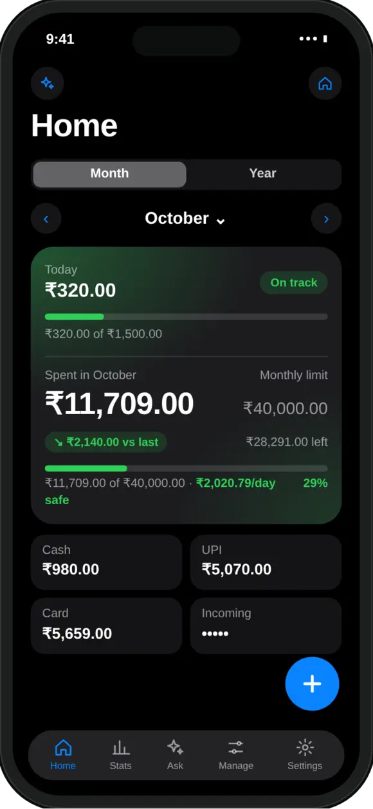

Why does cash spending go missing?
Because nothing records it for you. Every other payment leaves a message or a statement line. Cash leaves nothing.
When you pay by UPI, there is a payment history. A card leaves a statement. Your bank sends an SMS or an email. All of these can be imported later. Cash is the one payment with no record at all, which is why it is the first thing to fall out of a budget.
The amounts are usually small, which makes it worse. A few autos, tea, a tip, the local shop. Each one is easy to forget, and together they can add up to a real share of the month.
How do I log a cash expense quickly?
Type one short line and mark it as Cash. Four steps:
- Tap the plus button. On Home, tap + to open the Add screen.
- Type one line. In the top line, type what you paid for and the amount, for example auto 60, then tap Fill. The amount, name and category fill in.
- Pick Cash. Under Paid with, tap Cash.
- Save. Tap Save. The entry counts towards your Cash total for the month on Home.
You can also tap the microphone and say it instead of typing. If you forget at the time, the date is easy to change before you save. See how to log expenses by voice for more on speaking entries.
Can I log several cash payments at once?
Yes. Type or say them together and review them in one list.
If you prefer to catch up once a day, write them in one go, separated by commas: chai 20, auto 60, vegetables 140. Several entries open in a review list instead of a single form. Each row has its own Cash, UPI and Card buttons, so you can mark the cash ones before anything is saved. Nothing is added until you confirm.
A good routine is a two-minute check before bed: look at what is left in your wallet, and log whatever is missing.
Should I record an ATM withdrawal as an expense?
Pick one of two ways, and do not mix them, or the same money is counted twice.
- Count each cash spend. Log the chai, the auto and the shop as you go. The withdrawal itself is not spending, it only moves your own money from the bank to your wallet, so record it as a Transfer, or leave it out.
- Count the withdrawal only. If logging every small payment is too much, record the withdrawal as one cash expense and skip the details. You lose the breakdown, but the total stays right.
This matters most when you import a bank statement. MoneyOS imports an ATM withdrawal as an expense. If you already log your cash spends one by one, switch that row to Sent transfer in the review list before you import.
Where can I see how much I spent in cash?
On Home, next to UPI and Card.
Below the month's spending, Home shows three tiles: Cash, UPI and Card, each with this month's total. Tap Cash and the transaction list below shows only cash payments. Tap it again to clear the filter.
Entries with no payment method set are not lost. They appear as a small “unspecified” total under the tiles, and you can tap it to find and fix them.
Seeing the split helps with planning too. If cash is a steady share of your month, it can help to set a daily spending limit that includes it. Everything stays on your iPhone; see our privacy policy.

Frequently asked questions
How do I track cash expenses on iPhone?
Log each cash payment as you make it, or at the end of the day, and mark it as paid with cash. In MoneyOS, type one line such as auto 60 on the Add screen, tap Cash under Paid with, and save. Your month's cash total then shows on Home next to UPI and Card.
Should I record an ATM withdrawal as an expense?
Choose one way and stick to it. Either record the withdrawal as one expense and skip the individual cash spends, or record each cash spend and mark the withdrawal as a transfer, because it only moves your own money from the bank to your wallet. Doing both counts the same money twice.
Does MoneyOS detect cash payments automatically?
No. Cash leaves no SMS, email or statement line, so no app can see it. You add it yourself, by typing or saying it, and choose Cash under Paid with.
Can I log several cash spends at once?
Yes. Type or say them in one go, for example chai 20, auto 60, vegetables 140. They open in a review list, where each row has Cash, UPI and Card buttons, and nothing saves until you confirm.
Where do I see how much I paid in cash?
On Home, the Cash tile shows this month's cash spending. Tap it to filter the transaction list to cash only. Spending with no payment method set appears as a small unspecified total under the tiles.
Is MoneyOS free?
Yes. The whole app is free, with no subscription, no ads and no in-app purchases. There is no account and no bank login.